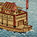

Requires
- Arts:

Enables
- Buildings:

- Arts:

- Units: 
Effects
- +7% turning speed for all ships
Description
As ships and sea battles are studied, contemplated and understood, it becomes plain that there should be more to a naval engagement than a series of desperate boarding assaults. Sailors can influence the course of a battle by using their ships' inherent abilities too. Naval expertise allows fleets to use gunpowder-based weapons, and allows the construction of fire bomb-equipped vessels too.
Naval warfare usually consisted of a series of boarding actions, with ships lashed together to make a floating battlefield. As ships closed, there would be a hail of missiles to kill enemy sailors and fighters, but not much more than that. Fire weapons were popular because they could set vessels alight and, hopefully, roast at least some of the opposition before the boarding action. With the advent of guns, arquebuses and larger pieces were carried aboard and used, but they were still only a prelude to the serious business of fighting by boarding. It is worth speculating that this kind of close combat suited the samurai temperament because it gave the chance for individuals to seek out and defeat worthy opponents. Although much more practical, simply sinking an enemy in long-range combat lacked this virtue!